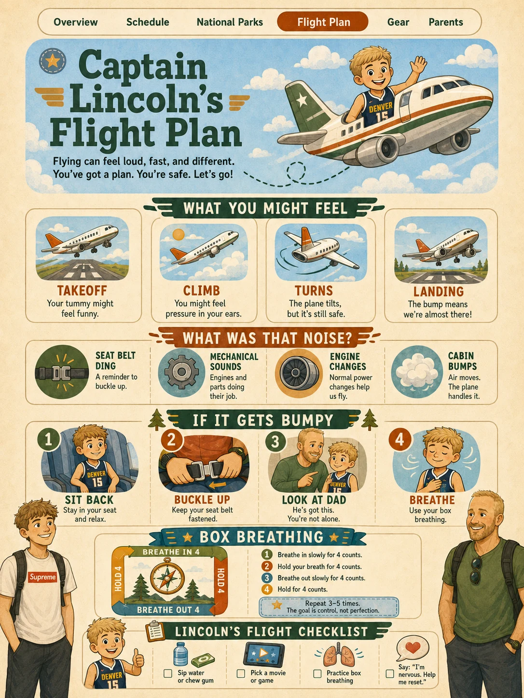

Captain Lincoln’s Flight Guide
The flight home is Saturday at 11:00 AM. Nervous is allowed. We just need a plan.

What Takeoff Feels Like
The plane goes fast, tilts up, and your stomach may feel weird for a few seconds. That is normal.
Normal Sounds
Engines, wheels going up, flaps, dings, bumps, and air blowing are all normal airplane sounds.
Turbulence
Bumps in the air are like bumps in the road. Seat belt on. Breathe. Keep doing your activity.